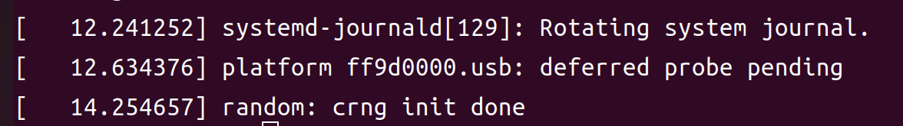

写在开头
接上篇，研究完 ZCU102 USB 理论后，进行在 [Hvisor] 上进行 USB 直通的尝试。
设备树修改
在现有能够正常在 ZCU102 上工作的精简设备树进行修改，加入 USB 及其关联设备的设备树节点。关系图如下：
可见引入一个 USB 会同时引入很多设备。这使得此次尝试变得复杂起来。
Hvisor 修改
为前述所有新增设备在 Hvisor 中配置直通区域和中断号。
Qemu 测试
自行编译的内核测试
使用自行编译的内核测试，成功启动 RootLinux，但 USB 为启动，提示 USB 驱动因为前置驱动未启动而被挂起。排查过配置本身后怀疑自行编译内核缺少相关驱动，换为 BSP 中自带的内核进行测试。

BSP 内核测试
使用 BSP 中自带的内核进行测试，成功启动 RootLinux，且内核日志有了正确的 USB 启动信息。
上板测试
有了 Qemu 测试的经验，直接在板上使用 BSP 自带内核进行尝试，发现卡死在内核启动，回档到最开始的精简设备树，可以正常启动。证明此问题由最近对设备树的改动产生。一个个增减设备，最后定位到 Clock-generator，其设备树描述如下：
1
2
3
4
5
6
7
8
9
10
11
12
13
14
15
16
17
18
19
20
21
22
23
| clock-generator@36 {
compatible = "silabs,si5341";
reg = <0x36>;
#clock-cells = <0x02>;
#address-cells = <0x01>;
#size-cells = <0x00>;
clocks = <0x1e>;
clock-names = "xtal";
clock-output-names = "si5341";
phandle = <0x22>;
out@0 {
reg = <0x00>;
always-on;
phandle = <0x7e>;
};
out@2 {
...
};
...
};
|
但 Clock-generator 设备树节点依赖少，且无中断号。因此感觉此问题只是表象，真正原因可能不是 Clock-generator 引起。回到 Qemu 查看卡死的下一条输出如下：
此为 ZynqMP AES Driver，参考此篇 Xilinx Wiki，此驱动为 ZynqMP SOC 上的一个对称密钥加密解密加速芯片服务。在设备树中的一般表现形式如下：
1
2
3
| xlnx_aes: zynqmp_aes {
compatible = "xlnx,zynqmp-aes";
};
|
翻看 ZCU102 的设备树，没有找到相关节点。因此只能考虑能揭示板子信息的设备节点。找到了 eeprom，将其加入设备树节点再次启动。发现可以成功进入内核，且有和 Qemu 一样的 USB 输出。
eeprom 一种记录板子相关信息的非易失性存储。
1
2
3
4
5
6
7
8
9
10
11
12
13
14
15
16
17
18
19
20
21
22
23
24
25
26
27
| eeprom@54 {
compatible = "atmel,24c08";
reg = <0x54>;
#address-cells = <0x01>;
#size-cells = <0x01>;
phandle = <0x79>;
board-sn@0 {
reg = <0x00 0x14>;
phandle = <0x7a>;
};
eth-mac@20 {
reg = <0x20 0x06>;
phandle = <0x7b>;
};
board-name@d0 {
reg = <0xd0 0x06>;
phandle = <0x7c>;
};
board-revision@e0 {
reg = <0xe0 0x03>;
phandle = <0x7d>;
};
};
|
使用随箱自带的 USB Type-B 转 Type-A 母头，连接 U 盘。查看内核输出和 lsblk 均未发现该 U 盘成功接入的迹象，换了鼠标也是一样，开始怀疑 USB 是否正常工作。
回忆上一篇理论，怀疑是工作模式出了问题，在设备树节点中，USB 节点如下：
1
2
3
4
5
6
7
8
9
10
11
12
13
14
15
16
17
18
19
20
21
22
23
24
25
26
27
28
29
30
31
32
33
34
35
36
37
38
39
40
41
| usb@ff9d0000 {
#address-cells = <0x02>;
#size-cells = <0x02>;
status = "okay";
compatible = "xlnx,zynqmp-dwc3";
reg = <0x00 0xff9d0000 0x00 0x100>;
clock-names = "bus_clk\0ref_clk";
power-domains = <0x12 0x16>;
resets = <0x11 0x3b 0x11 0x3d 0x11 0x3f>;
reset-names = "usb_crst\0usb_hibrst\0usb_apbrst";
reset-gpios = <0x27 0x01 0x01>;
ranges;
clocks = <0x04 0x20 0x04 0x22>;
assigned-clocks = <0x04 0x20 0x04 0x22>;
pinctrl-names = "default";
pinctrl-0 = <0x28>;
phy-names = "usb3-phy";
phys = <0x23 0x02 0x04 0x00 0x02>;
xlnx,tz-nonsecure = <0x01>;
xlnx,usb-polarity = <0x00>;
xlnx,usb-reset-mode = <0x00>;
phandle = <0x9d>;
usb@fe200000 {
compatible = "snps,dwc3";
status = "okay";
reg = <0x00 0xfe200000 0x00 0x40000>;
interrupt-parent = <0x05>;
interrupt-names = "host\0peripheral\0otg\0wakeup";
interrupts = <0x00 0x41 0x04 0x00 0x41 0x04 0x00 0x45 0x04 0x00 0x4b 0x04>;
iommus = <0x14 0x860>;
snps,quirk-frame-length-adjustment = <0x20>;
clock-names = "ref";
snps,resume-hs-terminations;
clocks = <0x04 0x22>;
dr_mode = "host";
snps,usb3_lpm_capable;
maximum-speed = "super-speed";
phandle = <0x9e>;
};
}
|
其中， 父节点（ff9d0000）是 USB 控制器，子节点（fe200000）一个具体的USB端口或接口，其中明确表明了该接口以 Host 模式工作。
但按照上文理论来看，ZCU102 默认跳线下， SM3320 是以 Device 工作的，所以笔者认为当前整个线路工作模式如下：
至于 3.0 这一线路怎么工作，是以什么模式工作。由于它集成在了 GTR 中，且信息偏少。就暂且不表，先研究 2.0 这一线路。
因此需要修改跳线让 SM3320 也以 Host 模式工作。
修改完毕后，再次尝试插拔 U 盘，发现内核中有了信息输出，且速度为 Super Speed（USB 3.0）。且可以正常打开设备。
接下来尝试插拔鼠标，同样内核有了信息输出，且速度为 Low Speed（USB 2.0），且设备中有了 input 设备节点。

综上，证明了 USB 2.0 / 3.0 均成功启用。 3.0 默认以 Host / OTG 工作。